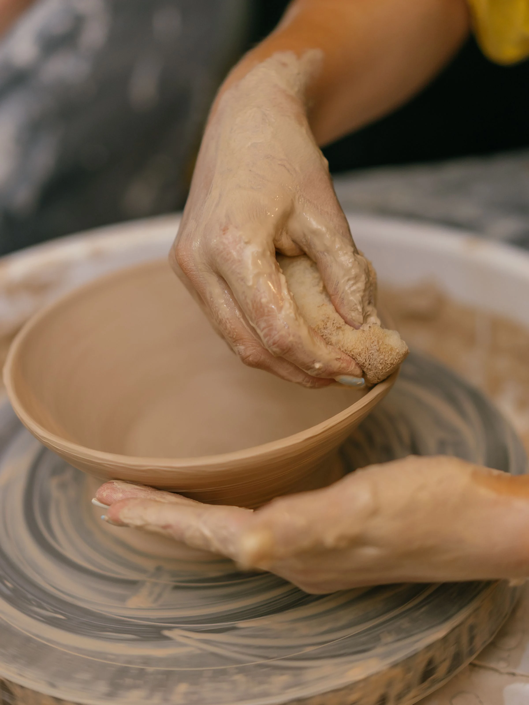
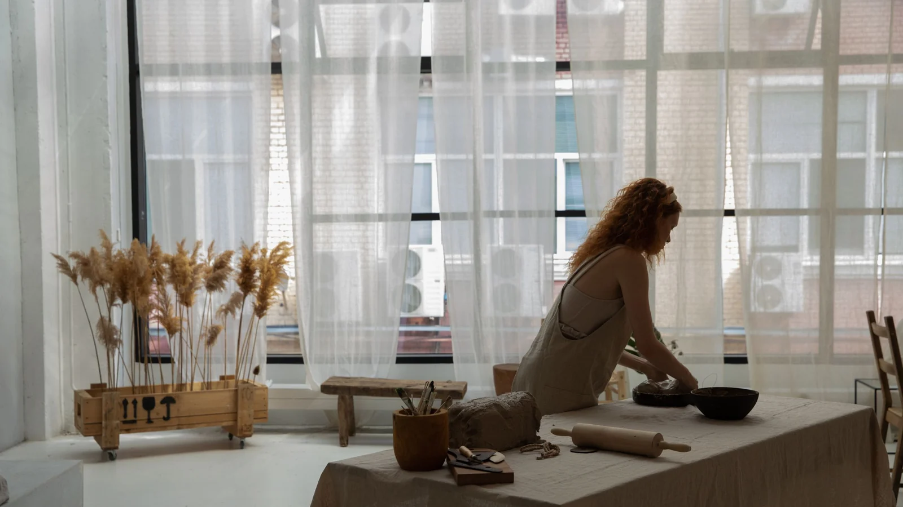
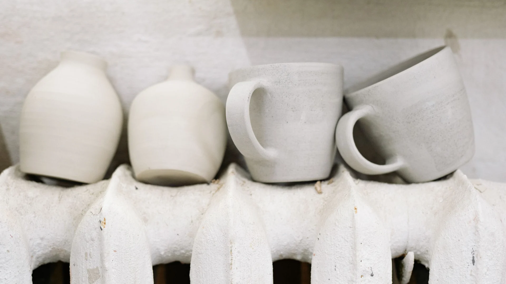

Why Every Mug Starts as 420 Grams of Clay
Every mug I make begins on the scale, not the wheel: what weighing clay to the gram settles before the wheel turns, where the 420 grams go, and when I ignore the number.
Read More →
Studio potter · Galway, Ireland
I throw stoneware by hand in Galway and film it slowly. This is the one place online I fully control.
Read This First
Since February 2026 I have found eleven accounts pretending to be me: seven on Instagram, four on TikTok. Most add "shop", "studio" or "official" to my handle, copy my kiln-opening photos, and take bank transfers for pots that do not exist. Seven are gone. I never sell through DMs, and I have no shop account.
This website is the only source I control. If an account isn't listed on my official links page, it is not me, no matter whose pots are on it.
From the Blog
Every mug I make begins on the scale, not the wheel: what weighing clay to the gram settles before the wheel turns, where the 420 grams go, and when I ignore the number.
Read More →
On firing days I starve a gas kiln of oxygen on purpose. What that does to iron and copper, why my celadon only exists because of it, and why no two firings match.
Read More →
Why a board of bowls can take a week to firm up in a Galway March, why slow drying is mostly kind to pots, and the plastic collars, damp cupboard and radiator that keep my handles on.
Read More →